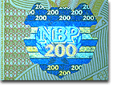

|
||
|
|
The ways in which money has
been made, and the materials used to make it, are an important part
of the history of money.
Making coins, paper money and plastic cards
involves complex processes, different in each case.
|
|


|
||
Bronze knife money and the mould.
From China 475-221 BC
How Coins are Made
Coins have nearly always been made of metal since their invention in the 7th century BC. Metal working demands considerable skill and technology. The metal has to be extracted from its natural state, often by mining, and then turned into the required form.
Making metal into coins is also complicated, both in design and production. Quality control and consistency are vital. Each coin has to be the same as the next, so that people accept that they are worth the same amount of money.


Coin Production
The two most important methods of coin production are striking and casting. The western tradition has tended to strike coins between engraved dies, while the Chinese and Far Eastern tradition has, until the 20th century, made coins by casting them in moulds.
Developments in minting technology over the centuries have hugely increased the numbers of coins which can be produced for circulation, in order to satisfy the increasing world-wide demand for coinage.
Security thread on a modern banknote.
This metal thread embedded into the
note helps prevent forgery.
How Paper Money is Made
The manufacture of banknotes plays an important role in allowing them to be used as money with confidence. High quality paper is specially made for durability and security. Designs are chosen to make the notes recognisable as national currency, then reproduced by first-class engraving and printing.
New security devices are created by computer graphics and advanced technology. The threat of forgery is a constant problem, despite severe penalties. However, this encourages continuing research into improved production methods.
Printing and Security
High quality printing and engraving help to give banknotes their distinctive character and protection against forgery. Over the last three hundred years, the appearance of paper money has changed from black and white texts to brightly coloured pictorial images.
Continuing research has led to the introduction of new printing methods and advanced security devices such as holograms. However, traditional artistic skills remain fundamental in the creation of attractive and secure images.
>> Go to the top of the page

Close-up of a security hologram
on a 200 zlotych note of Poland